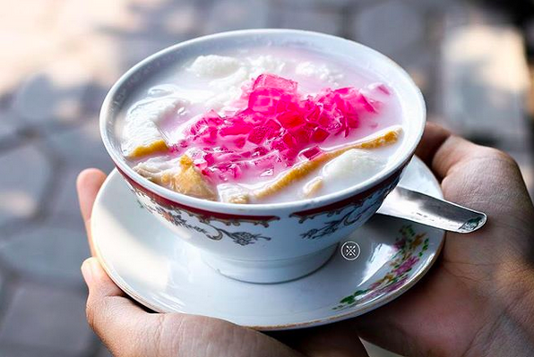
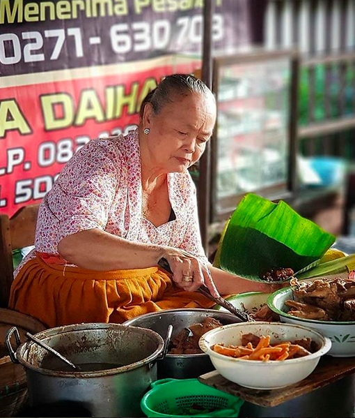

5 Kuliner Lezat Khas Solo yang Siap Goyang Lidahmu, Sudah Coba?
Surakarta atau Solo jadi salah satu kota di Indonesia yang patut untuk dikunjungi.
Menempati luas daerah sekitar 46 kilometer persegi, Solo menyimpan berbagai keunikan yang tidak terduga. Keramahan masyarakatnya, nuansa budaya yang kental,
serta makanan murah nan enak jadi daya pikat yang tidak dapat terpisahkan dari Kota Batik ini.
Berniat berkunjung ke Solo? Selain destinasi wisata budaya dan alam, kamu sepertinya harus menyempatkan wisata kuliner di Solo.
Rugi deh ke Solo kalau gak nyobain makanan enaknya, seperti 5 daftar berikut ini:
1. Wedang asle khas Solo, kalau di tempatmu namanya apa?

2. Sayuran, daging dan bayam jadi satu. "Surga dunia" banget bagi yang doyan makan
3. Kalau gudeg di Yogya rasanya lebih manis, tapi gudeg Solo terkenal gurih

4. Menu sehat tapi enak? Brambang asem pilihan yang tepat
5. Gak boleh ketinggalan untuk dicicipi, nasi liwet khas Solo